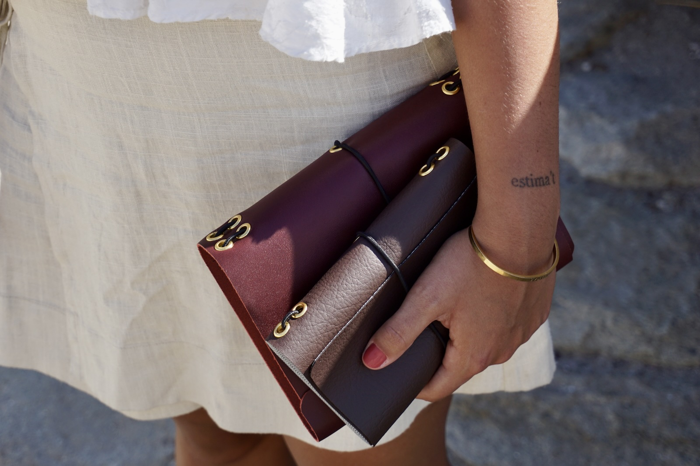
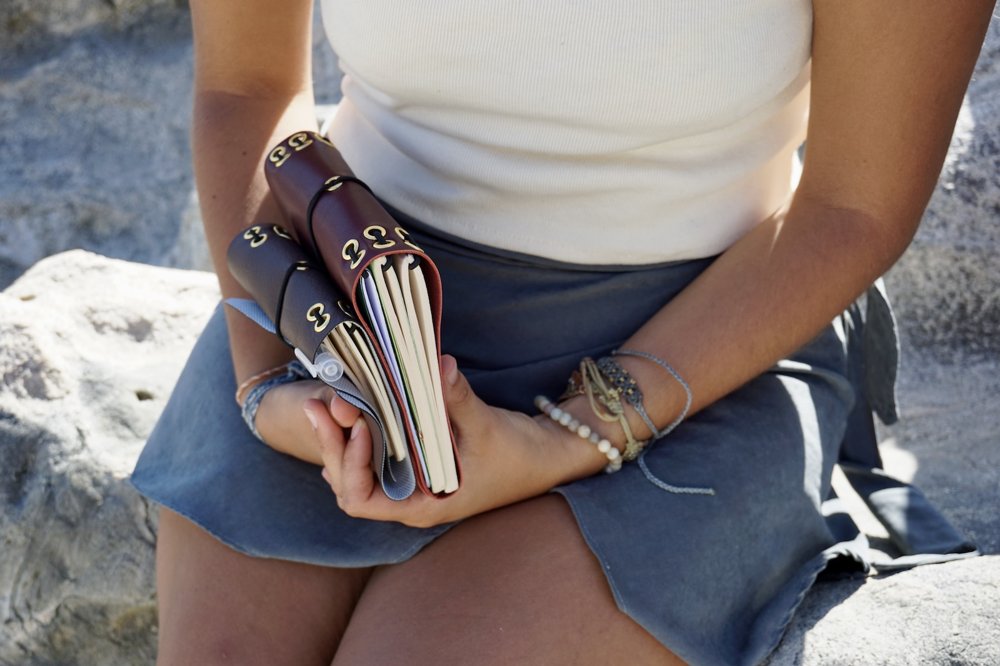
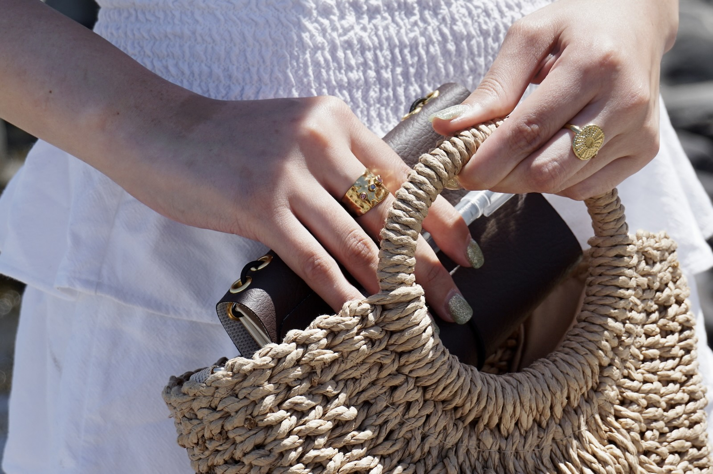
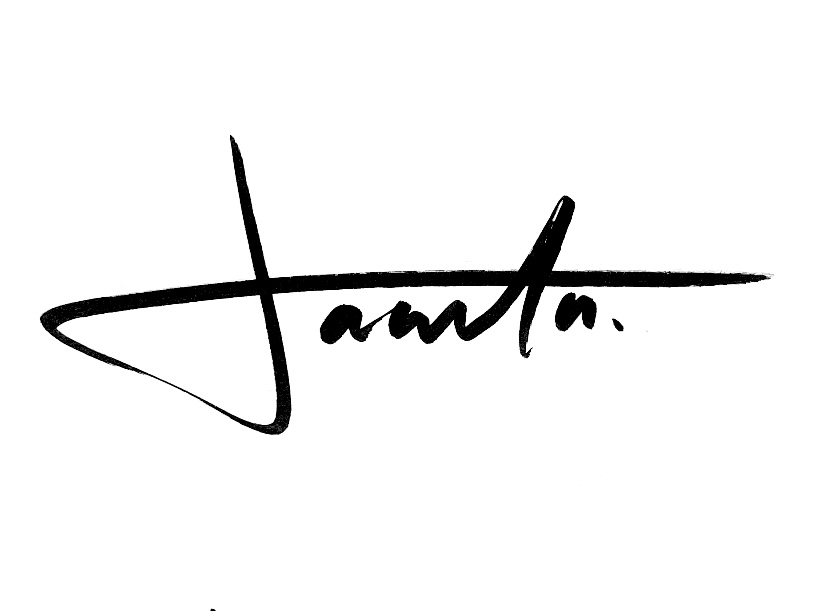

Sobre la marca
Hecho por Jacinta es un proyecto de objetos hechos a mano, donde el diseño, el material y el uso cotidiano se encuentran. Cada pieza se produce en pequeñas cantidades, cuidando el proceso y los detalles.
Productos destacados
Sobre mí

Soy Jacinta, diseñadora en formación. Trabajo desde el hacer manual, la exploración material y la atención al detalle.